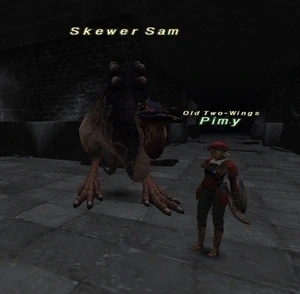

Level 75 reference · Zenith rules
|
Job: Notorious Monster
|
 |

|
Zone |
Level |
Drops |
Steal |
Spawns |
Notes |
|
54 |
1 |
A, S | |||
|
HP = Detects Low HP; M = Detects Magic; Sc = Follows by Scent; T(S) = True-sight; T(H) = True-hearing JA = Detects job abilities; WS = Detects weaponskills; Z(D) = Asleep in Daytime; Z(N) = Asleep at Nighttime | |||||
Notes:
- Can be found past the first Banishing Gate - (G-7)-(G-8).
- Respawns approx. 21-24 hours.
- Will aggro a level 75.
- Easily duo'd by a 60 Red Mage and 68 Dragoon.
Adapted from Eden Wiki: Skewer Sam · Contributors and history · CC BY-SA 4.0. Revision 44583. Layout, links and optional background text adapted for Zenith.